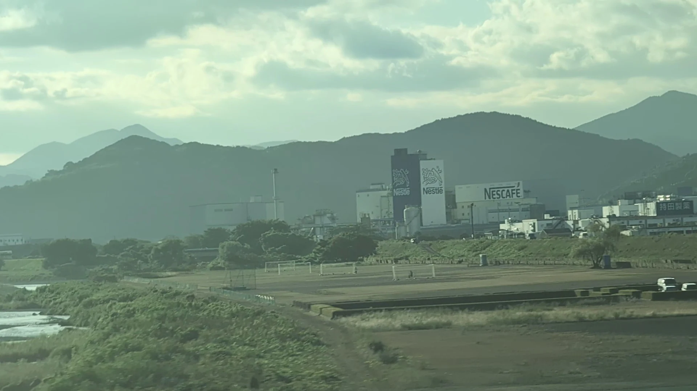
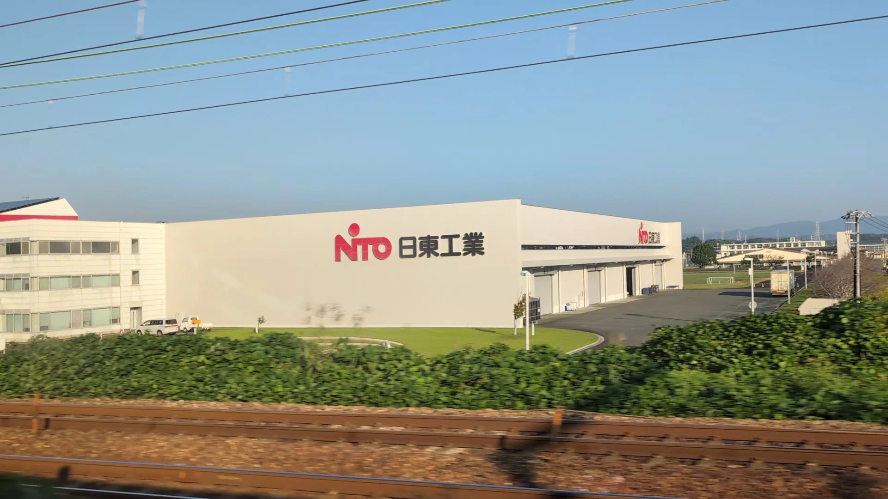
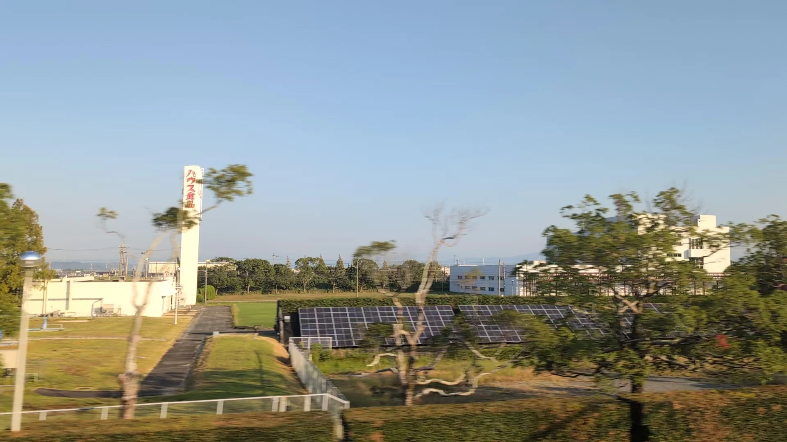
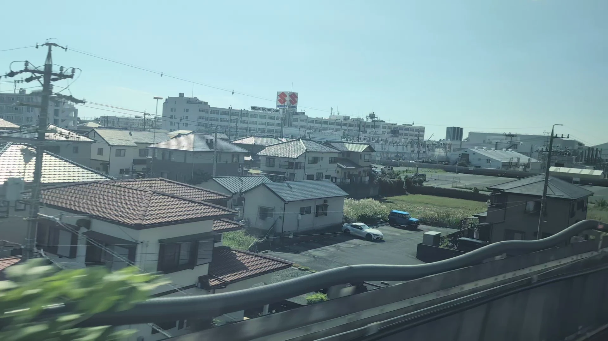
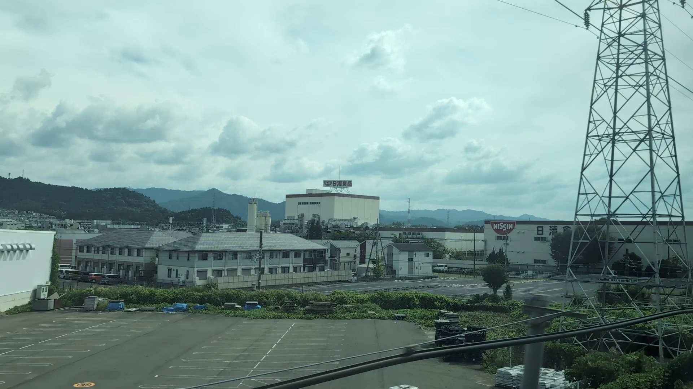

เลือกดูจากภาพถ่าย
กาแฟ ขนม และเครื่องสำอาง ชวนมองหาโรงงานจากโทไคโดชินคันเซ็น พร้อมภาพถ่ายและคำแนะนำว่าควรมองจากที่นั่งฝั่ง A หรือ E
มิชิมะ → ชินฟูจิ
เชิงภูเขาไฟฟูจิ

ที่นั่งฝั่ง Eด้านขวาตามทิศทางที่รถไฟวิ่ง โรงงานฟูจิของ UCC
หอคอยกาแฟกับภูเขาไฟฟูจิ
ลองมองหาหอคอยสีขาวที่เขียนว่า “UCC COFFEE FUJI” ด้านหลังโรงงานผลิตกาแฟคั่วแห่งนี้มีภูเขาไฟฟูจิซ้อนอยู่ในวิวเดียวกัน

ที่นั่งฝั่ง Eด้านขวาตามทิศทางที่รถไฟวิ่ง โรงงานฟูจิของ Nippon Paper · พื้นที่ฟูจิ
กระดาษในชีวิตประจำวัน ใต้เงาฟูจิ
ปล่องสีแดงสลับขาวและภูเขาไฟฟูจิเป็นจุดสังเกต ภายในพื้นที่นี้มีโรงงานชินฟูจิของ Crecia Kasuga ซึ่งผลิตกระดาษชำระแบบม้วนและกระดาษใช้ในบ้านชนิดอื่น ๆ

ที่นั่งฝั่ง Eด้านขวาตามทิศทางที่รถไฟวิ่ง โรงงานสำนักงานใหญ่ Koa Kogyo
ปล่องควันสีรุ้งในยามค่ำ
โรงงานนี้ผลิตกระดาษสำหรับทำกระดาษลูกฟูกและสินค้าอื่น ๆ แสงสีรุ้ง “Nijien” ในภาพเป็นการจัดแสดงเฉพาะวันที่ 11–23 พฤศจิกายน 2026 จึงไม่ใช่วิวที่เห็นได้เป็นประจำ
ชิซูโอกะ → คาเคกาวะ
ยาอิซุและแม่น้ำโออิ

ที่นั่งฝั่ง Aด้านซ้ายตามทิศทางที่รถไฟวิ่ง โรงงานชิซูโอกะของ Sapporo Beer
เบียร์ของชิซูโอกะ เริ่มต้นที่ยาอิซุ
ถังสีเงินเรียงรายกับเครื่องหมายรูปดาวช่วยบอกตำแหน่ง เบียร์ “Shizuoka Bakushu” ที่ขายเฉพาะในจังหวัดชิซูโอกะก็มาจากโรงงานในเมืองยาอิซุแห่งนี้

ที่นั่งฝั่ง Eด้านขวาตามทิศทางที่รถไฟวิ่ง โรงงานชิซูโอกะของ Kibun Foods
“＋S” บนห่อคามาโบโกะ
เหนือหลังคาสีแดงที่เรียงต่อกัน มีเครื่องหมาย Kibun โผล่ขึ้นมา โรงงานนี้ผลิตคามาโบโกะและชิกุวะ ซึ่งทำจากเนื้อปลาบด รหัสโรงงาน “＋S” บนบรรจุภัณฑ์หมายถึงที่นี่
ใกล้สะพานรถไฟข้ามแม่น้ำโออิ หน้าต่างฝั่งตรงข้ามมองเห็นอาคารของ Ajinomoto

ที่นั่งฝั่ง Eด้านขวาตามทิศทางที่รถไฟวิ่ง โรงงานชิมาดะของ Nestlé Japan
ชื่อกาแฟอยู่ฝั่งโน้นของแม่น้ำ
เมื่อวิวเปิดออกเป็นลานริมแม่น้ำกว้าง ๆ ให้มองไปยังเชิงเขา โรงงานชิมาดะผลิตกาแฟ และยังนำกากกาแฟหลังการสกัดไปใช้เป็นเชื้อเพลิงสำหรับหม้อไอน้ำด้วย
มองไปทางต้นน้ำจากสะพานแม่น้ำโออิ โรงงานอยู่ห่างจากทางรถไฟประมาณ 1.3 กิโลเมตร

ที่นั่งฝั่ง Aด้านซ้ายตามทิศทางที่รถไฟวิ่ง Ajinomoto Foods และ Ajinomoto Bakery
ข้าวต้มกับขนมปังที่ยังไม่อบ
ข้อความ “Knorr” อยู่บนผนังสีขาวที่โค้งยื่นออกมา ที่อยู่เดียวกันนี้เป็นทั้งโรงงานชิซูโอกะของ Ajinomoto Foods ซึ่งผลิตข้าวต้มญี่ปุ่นหรือโอคายุ และสถานประกอบการชิมาดะของ Ajinomoto Bakery ซึ่งผลิตแป้งโดขนมปังแช่แข็ง
ใกล้สะพานแม่น้ำโออิ อยู่คนละฝั่งของทางรถไฟกับหอคอยสีแดงของ Kibun
แหล่งข้อมูล
- Ajinomoto Foods | สินค้าที่ผลิตในโรงงานชิซูโอกะ
- Ajinomoto Bakery | การผลิตแป้งโดขนมปังแช่แข็ง
- Ajinomoto Bakery | ที่ตั้งสถานประกอบการชิมาดะ
ภาพนี้ใช้ระบุได้เพียงภายนอกพื้นที่ ยังไม่ได้ยืนยันว่าแต่ละอาคารเป็นที่ตั้งของสายการผลิตใด
คาเคกาวะ → ฮามามัตสึ
คาเคกาวะ ฟุคุโรอิ และฮามามัตสึ

ที่นั่งฝั่ง Aด้านซ้ายตามทิศทางที่รถไฟวิ่ง โรงงานคาเคกาวะของ Shiseido
เครื่องสำอางใต้หลังคาขาวขนาดใหญ่
หลังคาสีขาวขนาดใหญ่ทอดยาวขนานกับทางรถไฟ โรงงานนี้ผลิตเครื่องสำอางสำหรับแต่งหน้า ส่วนหลังคาช่วยปกป้องสินค้าจากลม ฝน และแดดระหว่างการจัดส่ง

ที่นั่งฝั่ง Aด้านซ้ายตามทิศทางที่รถไฟวิ่ง โรงงานชิซูโอกะของ Marudai Food
“＋P” บนห่อ คือรหัสของคาเคกาวะ
เหนือแนวต้นไม้มีเครื่องหมายสีแดงของ Marudai Food และด้านล่างเป็นหน้าต่างกลมเรียงกัน ในปี 2023 บริษัทแนะนำไส้กรอก Long Wiener ที่ผลิตจากโรงงานนี้ รหัสโรงงานบนบรรจุภัณฑ์คือ “＋P”
ห่างจากสถานีคาเคกาวะไปทางฮามามัตสึประมาณ 4 กิโลเมตร ขบวนมุ่งหน้าชินโอซาก้าจะผ่านหลัง Shiseido

ที่นั่งฝั่ง Aด้านซ้ายตามทิศทางที่รถไฟวิ่ง โรงงานฟุคุโรอิของ POLA Chemical Industries
รถไฟของเราสะท้อนอยู่ในกระจก
ลองมองผนังกระจกแนวยาวของโรงงานเครื่องสำอางแห่งนี้ หากแสงพอดี อาจเห็นเงาสะท้อนของชินคันเซ็นขบวนที่คุณกำลังนั่งอยู่

ที่นั่งฝั่ง Aด้านซ้ายตามทิศทางที่รถไฟวิ่ง โรงงานฟุคุโรอิของ Otsuka Pharmaceutical
ผนังสีน้ำเงินบอกว่า Pocari อยู่ที่นี่
เหนือสนามหญ้าสีเขียวมีผนังสีน้ำเงินขนาดใหญ่เขียนว่า “POCARI SWEAT” เห็นแวบเดียวก็จำได้ว่านี่คือโรงงานผลิตโพคารี่สเวทและเครื่องดื่มชนิดอื่น ๆ

ที่นั่งฝั่ง Eด้านขวาตามทิศทางที่รถไฟวิ่ง โรงงานคาเคกาวะของ Nitto Kogyo
โรงงานของกล่องที่ปกป้องระบบไฟฟ้า
มองหาข้อความ “NITO 日東工業” บนผนังสีขาว สิ่งที่ผลิตที่นี่คือตู้ขนาดเล็กสำหรับบรรจุและปกป้องอุปกรณ์ไฟฟ้า

ที่นั่งฝั่ง Eด้านขวาตามทิศทางที่รถไฟวิ่ง โรงงานชิซูโอกะของ Unicharm Products
เครื่องหมายคุ้นตาอยู่ในสวนด้วย
มองตามแถบคลื่นสีเหลืองและส้มบนผนังสีขาว แล้วจะพบเครื่องหมายขนาดใหญ่ในสวนด้วย ที่นี่ผลิตผ้าอ้อมสำเร็จรูปสำหรับเด็กและผู้ใหญ่ ผลิตภัณฑ์สุขอนามัยช่วงมีประจำเดือน และแผ่นทำความสะอาด เป็นต้น
ห่างจากสถานีคาเคกาวะไปทางฮามามัตสึประมาณ 4 กิโลเมตร ขบวนมุ่งหน้าชินโอซาก้าจะผ่านหลัง Nitto Kogyo

ที่นั่งฝั่ง Eด้านขวาตามทิศทางที่รถไฟวิ่ง โรงงานชิซูโอกะของ House Foods
ทั้งแกงกะหรี่และขนมขบเคี้ยว
มองหาหอป้ายที่เขียนว่า “ハウス食品” โรงงานในเมืองฟุคุโรอิแห่งนี้ผลิต Vermont Curry, Hokkaido Stew และขนมข้าวโพดทรงกรวย Tongari Corn

ที่นั่งฝั่ง Eด้านขวาตามทิศทางที่รถไฟวิ่ง โรงงานฟุคุโรอิมินามิของ Yamaha Motor
จากข้างทางรถไฟ สู่ทะเลทั่วโลก
สังเกตตัวอักษร YAMAHA สีแดงกับแผงระแนงสีขาวแนวตั้ง โรงงานนี้ผลิตเครื่องยนต์ติดท้ายเรือ ซึ่งติดตั้งอยู่ด้านท้ายของตัวเรือ

ที่นั่งฝั่ง Eด้านขวาตามทิศทางที่รถไฟวิ่ง สำนักงานใหญ่และโรงงาน Teibow
จากเทคนิคทำหมวก สู่หัวปากกา
ป้าย “TEIBOW” สีเขียวคือจุดสังเกตของสำนักงานใหญ่และโรงงาน บริษัทนี้นำความชำนาญในการแปรรูปผ้าสักหลาดสำหรับหมวก มาต่อยอดสู่การทำหัวปากกา
แหล่งข้อมูล
ยังไม่ได้ยืนยันว่าโรงงานสำนักงานใหญ่รับผิดชอบการผลิตสินค้าชนิดใดบ้างในปัจจุบัน
ฮามามัตสึ → โทโยฮาชิ
ทาคัตสึกะ ทะเลสาบฮามานะ และโทโยฮาชิ

ที่นั่งฝั่ง Aด้านซ้ายตามทิศทางที่รถไฟวิ่ง สำนักงานใหญ่ Suzuki ที่ทาคัตสึกะ
ตัว S สีแดงเหนือหลังคาบ้าน
เหนือหลังคาบ้านมีตัว S สีแดงที่คุ้นตาจากรถยนต์โผล่ขึ้นมา ที่นี่คือสำนักงานใหญ่ Suzuki ส่วนการผลิตเครื่องยนต์รถจักรยานยนต์ที่เคยอยู่ทาคัตสึกะ ย้ายไปมิยาโกดะในเมืองฮามามัตสึเมื่อปี 2018
ระหว่างสถานีฮามามัตสึกับทะเลสาบฮามานะ ใกล้สถานี JR ทาคัตสึกะ ขบวนมุ่งหน้าชินโอซาก้าจะเห็นก่อนข้ามทะเลสาบ ส่วนขบวนมุ่งหน้าโตเกียวจะเห็นหลังข้ามแล้ว

ที่นั่งฝั่ง Aด้านซ้ายตามทิศทางที่รถไฟวิ่ง โรงงานโทโยฮาชิของ Sinfonia Technology
เคลื่อนย้ายแผ่นซิลิคอนอย่างนุ่มนวล
หลังสนามหญ้ามีผนังยาวเขียนว่า “豊橋製作所” และ “創業1917年” หมายถึงโรงงานโทโยฮาชิและก่อตั้งปี 1917 ที่นี่เป็นฐานการผลิตหลักแห่งหนึ่งของอุปกรณ์ขนย้ายแผ่นซิลิคอนบาง ๆ โดยรักษาความสะอาด ระหว่างกระบวนการผลิตเซมิคอนดักเตอร์ เช่น ชิปที่ใช้ในสมาร์ตโฟน
ย่านมิตสึยะ เมืองโทโยฮาชิ อยู่เลยสถานีฟุตากาวะไปทางโตเกียว ขบวนมุ่งหน้าชินโอซาก้าจะเห็นก่อนถึงโทโยฮาชิ ส่วนขบวนมุ่งหน้าโตเกียวจะเห็นหลังออกจากโทโยฮาชิ
แหล่งข้อมูล
- Sinfonia | อุปกรณ์ขนย้ายสำหรับการผลิตเซมิคอนดักเตอร์และโรงงานโทโยฮาชิ
- Sinfonia | โรงงานโทโยฮาชิกับชินคันเซ็น
- Sogo Hodo | ป้ายยาวประมาณ 70 เมตรในย่านซาซาชิมะ นาโกย่า
- Chuden Clavis | ป้ายโฆษณาบนผนังด้านตะวันออกของซาซาชิมะ
ชื่อบริษัทเดียวกันยังปรากฏอยู่ทางใต้ของสถานีนาโกย่าประมาณ 800 เมตร แต่จุดนั้นเป็นป้ายโฆษณายาวราว 70 เมตรบนผนังศูนย์การค้า Market Square Sasashima
ป้ายชื่อเดียวกันที่นาโกย่า

มิคาวะอันโจ → นาโกย่า
อันโจ

ที่นั่งฝั่ง Eด้านขวาตามทิศทางที่รถไฟวิ่ง โรงงานอันโจของ Yamazaki Baking
ขนมปังมื้อเช้ามาจากข้างทางรถไฟ
เครื่องหมายดวงอาทิตย์กับข้อความ “ヤマザキ” สีแดงอยู่ใกล้ทางรถไฟ โรงงานใกล้มิคาวะอันโจแห่งนี้ผลิตขนมปัง รวมทั้งขนมแบบญี่ปุ่นและตะวันตก

ที่นั่งฝั่ง Eด้านขวาตามทิศทางที่รถไฟวิ่ง โรงงานอันโจของ Nichiban
ป้ายที่คุ้นตา กับบทบาทที่เปลี่ยนไป
ป้าย “セロテープ” สีแดง ขาว และน้ำเงินเป็นจุดสังเกต โรงงานเทปกาวแห่งนี้กำลังขยายบทบาทไปสู่ผลิตภัณฑ์ที่ใช้สนับสนุนงานทางการแพทย์ด้วย
แหล่งข้อมูล
- Nichiban | รายงานหลักทรัพย์ปี 2026 (หน้า 37)
- Nichiban | คำชี้แจงเรื่องปรับโครงสร้างการผลิต (2025)
- Nichiban | ป้ายโฆษณาบนผนังที่มองเห็นจากรถไฟ
ข้อมูลสถานประกอบการปี 2026 ระบุเทปกาวสำหรับงานทางการแพทย์ รวมทั้งเทปกระดาษและพลาสติก คำชี้แจงทางการปี 2025 ระบุว่ารวมการผลิตที่เกี่ยวข้องกับ Cellotape ไปไว้ที่ไซตามะ จึงไม่อาจใช้ป้ายเพียงอย่างเดียวตัดสินว่าอันโจยังผลิต Cellotape อยู่ในปัจจุบัน
นาโกย่า → กิฟุฮาชิมะ
คิโยสุ

ที่นั่งฝั่ง Eด้านขวาตามทิศทางที่รถไฟวิ่ง โรงงานนาโกย่าของ Kirin Beer
ถังที่ดูเหมือนเบียร์ขนาดยักษ์
ถังสีเงินสลับทองตั้งเรียงกัน ลองมองหาโรงงานในเมืองคิโยสุแห่งนี้บนช่วงทางจากนาโกย่าไปกิฟุฮาชิมะ ที่นี่ผลิตเบียร์ Ichiban Shibori
ไมบาระ → เกียวโต
ไมบาระ ฮิโกเนะ และโอมิ

ที่นั่งฝั่ง Aด้านซ้ายตามทิศทางที่รถไฟวิ่ง สถาบันวิจัยกลาง Yanmar
นาฬิกาใหญ่เมื่อออกจากไมบาระ
อาคารแนวยาวมีตัวอักษร “YANMAR” สีแดงและนาฬิกาขนาดใหญ่ ที่นี่คือสถาบันวิจัยกลางในไมบาระ ซึ่งศึกษาเทคโนโลยีช่วยให้เครื่องยนต์ประหยัดเชื้อเพลิงและพลังงานทางเลือก
ขบวนมุ่งหน้าชินโอซาก้าจะเห็นไม่นานหลังออกจากไมบาระ มีบันทึกจากผู้โดยสาร Kodama ว่าเห็นประมาณ 1 นาทีหลังออกจากสถานี ส่วนขบวนมุ่งหน้าโตเกียวจะเห็นก่อนถึงไมบาระ

ที่นั่งฝั่ง Eด้านขวาตามทิศทางที่รถไฟวิ่ง Fujitec Big Wing
เบื้องหลังการขึ้นลงลิฟต์ทุกวัน
หอสูงที่เห็นเป็นหอวิจัยลิฟต์ ในพื้นที่เดียวกันมีโรงงานผลิตลิฟต์ทั้งรุ่นมาตรฐานและแบบสั่งทำ จึงเป็นทั้งสถานที่วิจัยและฐานการผลิต

ที่นั่งฝั่ง Aด้านซ้ายตามทิศทางที่รถไฟวิ่ง โรงงานชิงะของ Lotte
ป้ายขนมยักษ์เรียงราย
ป้ายขนมและไอศกรีมขนาดใหญ่ตั้งเรียงกัน ที่นี่ผลิตยูกิมิไดฟูกุ คูลิช และท็อปโป เป็นต้น แต่ไม่ได้ผลิตสินค้าทุกชนิดที่ปรากฏบนป้าย

ที่นั่งฝั่ง Aด้านซ้ายตามทิศทางที่รถไฟวิ่ง โรงงานชิงะของ Nissin Foods
ข้าวถ้วยสำเร็จรูปก็มาจากที่นี่
เมื่อผ่านริตโตะ ลองมองหาอาคารที่เขียนว่า “日清食品” โรงงานนี้ผลิตข้าวสำเร็จรูปแบบถ้วย เช่น Curry Meshi ด้วย และเป็นคนละแห่งกับโรงงานคันไซซึ่งอยู่ฝั่ง E ตรงข้ามกัน
เกียวโต → ชินโอซาก้า
ยามาซากิ

ที่นั่งฝั่ง Eด้านขวาตามทิศทางที่รถไฟวิ่ง โรงกลั่นยามาซากิของ Suntory
บ้านของวิสกี้ที่เชิงเขา
มองหาตัวอักษร “山崎” หลังแนวหลังคาบ้านและสายไฟ โรงกลั่นแห่งนี้ผลิตวิสกี้มอลต์ที่นำไปใช้ในซิงเกิลมอลต์ยามาซากิ
ควรมองจากหน้าต่างฝั่งไหน
ในตู้โดยสารชั้นธรรมดา ขบวนมุ่งหน้าชินโอซาก้ามีที่นั่ง A อยู่ทางซ้ายและ E อยู่ทางขวา ส่วนขบวนมุ่งหน้าโตเกียวจะสลับกัน สำหรับ Green Car ที่นั่งฝั่ง D อยู่ด้านเดียวกับฝั่ง E ของชั้นธรรมดา
เกี่ยวกับคู่มือนี้
บทบาทและสินค้าของแต่ละแห่งอ้างอิงจากแหล่งข้อมูลที่ตรวจสอบในเดือนพฤศจิกายน 2026 ซึ่งส่วนใหญ่เป็นภาษาญี่ปุ่น ภายในช่วงสถานีเดียวกัน รายการอาจไม่ได้เรียงตามลำดับที่รถไฟผ่านอย่างเคร่งครัด และระยะทางเป็นค่าประมาณ
ภาพถ่าย: michikusa · รถไฟในภาพของ POLA: © Disney
เค คุริฮาระ: «東海道新幹線の車窓は、こんなに面白い！» (ต้นฉบับภาษาญี่ปุ่น ปี 2016)